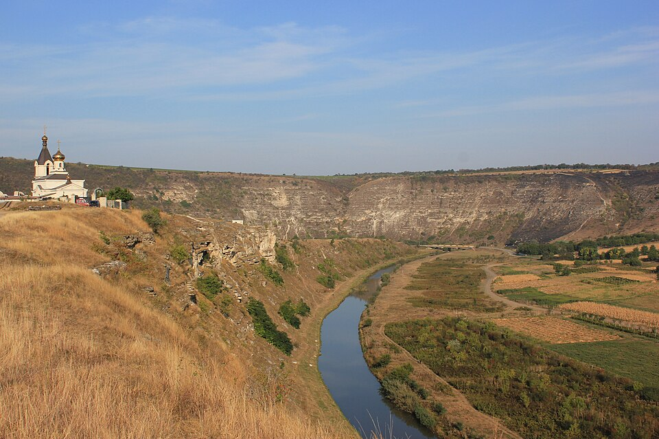
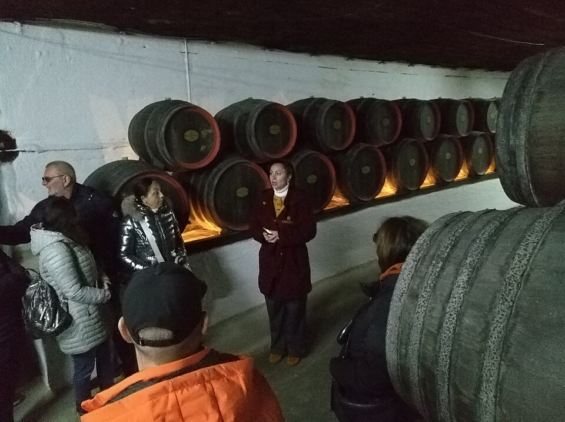
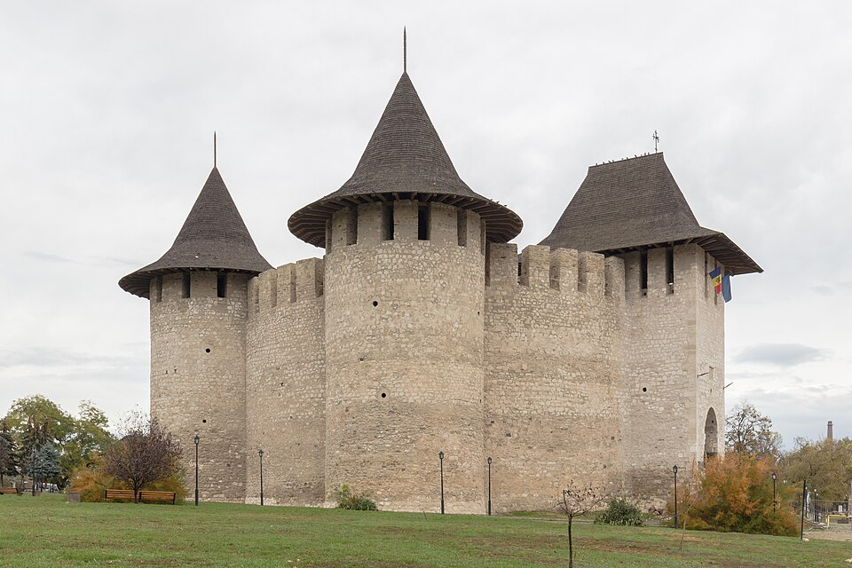
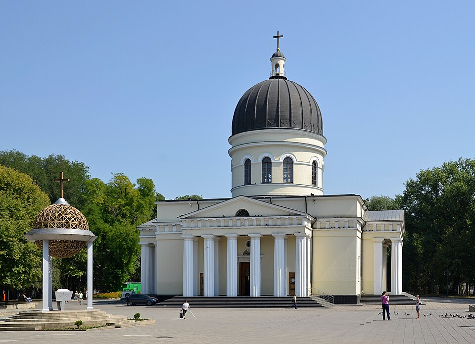

Moldova몰도바 Republica Moldova
포도밭과 석회암 수도원, 다언어 문화가 만나는 드네스트르·프루트 사이의 나라
- Capital
- 키시너우 (Chișinău)
- Language
- 루마니아어
- Currency
- 몰도바 레우 (MDL)

오르헤이울 베키 동굴수도원Orheiul Vechi
크리코바 지하 와인 저장고Cricova underground winery
소로카 요새Soroca Fortress
키시너우 예수탄생 대성당Nativity Cathedral, ChișinăuExplore Moldova
몰도바 더 알아보기
몰도바는 루마니아와 우크라이나 사이의 내륙국으로 포도밭·와인 저장고·전통음식·정교회 문화와 농촌 풍경이 대표적이다. 국가의 공용어는 루마니아어이며 가가우즈어·러시아어·우크라이나어 등도 지역과 공동체별로 사용된다. 1991년 독립 이후 EU와의 경제·제도 연계를 확대하고 있지만, 트란스니스트리아의 미해결 분쟁과 전쟁 인접 위험을 구별하여 설명해야 한다.


Latest updates
몰도바 최근 뉴스
-
몰도바 가가우지아 지도자 선거 결선으로…스토이아노글로 38.4%, 친러 후보 24.2%
키이우인디펜던트에 따르면 친러 성향의 자치지역 가가우지아 지도자 선거 1차 투표에서 과반 득표자가 없어 11월 29일 결선이 치러집니다.
-
몰도바 국경 포도밭서 드론 잔해 발견, 루마니아 상원은 재무장관 불신임안 기각
키이우인디펜던트에 따르면 몰도바 경찰이 오데사 지역에 대규모 러시아 드론 공격이 있은 뒤 우크라이나 국경 인근 포도밭에서 드론 잔해를 발견했습니다.
-
몰도바 “러시아 가스 구매 제로”…EU 연결 새 송전선 개통, 루마니아 흑해 안보 논의
키이우인디펜던트에 따르면 산두 몰도바 대통령은 11월 8일 러시아산 가스를 구매하지 않는다고 밝히고 볼쿠네슈티-키시너우 구간 158km 송전선을 개통했습니다. 루마니아와 잇는 송전선 2개가 더 건설 중이라고 했습니다.